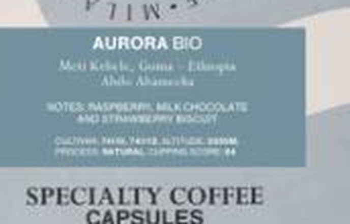

The homepage sells direct farmer relationships and a coffee academy. The product grid sells a score out of 100 and a name like “Pink Jaguar.” The strange part: the real story — origin, process, tasting notes — is already printed on the packaging. It just isn’t on the page.
Reviewed 18 September 2026 · Scope: homepage, full Coffee catalog (16 products), and product packaging photography at cafezal.it — the same material a Positioning Audit client would hand over on day one. No interviews, no private information, nothing beyond what’s public.
I picked Cafezal Milano and this specific gap on my own initiative — no engagement, no affiliation, nothing commissioned, and nothing here uses anything beyond what’s publicly visible on their site today. It exists to show how I’d approach a Brand Platform project, not to claim I was hired for one. If Cafezal would rather this page not exist, email me and it comes down — no argument.
Splitting “sourcing story” into two rows is the point of this audit: the same brand scores completely differently depending on whether you’re looking at the package photography or the page text next to it. That’s not two different brands — it’s one brand whose best material didn’t make it into every format.


“Aurora Bio” · Specialty Coffee Capsules · €5.90–€65.00. No origin, no process, no tasting note in the copy a buyer reads while scrolling.
“Meti Kebele, Guji, Ethiopia · notes of raspberry, milk chocolate and strawberry biscuit · altitude 2000m · natural process · cupping score 89.” All of it, already written — on the bag in the product photo.
This is a sharper finding than “Cafezal has no sourcing story” — they clearly do, and their packaging designer already built a clean template for telling it (origin → tasting notes → cultivar/altitude → process → cupping score). The gap is narrower and more fixable than it first looks: that same template just never gets repeated as actual page text, which means it’s invisible to anyone scanning the grid quickly, to search engines, and to screen readers. The specificity exists. It’s locked inside a photograph.
A Brand Platform includes everything Brand Strategy Core does, plus the guidelines document that carries the voice into exactly this kind of gap — product pages, packaging, the academy’s own materials. Below is a first pass, built from Cafezal’s own real, already-public packaging copy — nothing invented.
“Everything we know about a bag, you know too — before you open it.”
This turns “direct relationships with farmers” — currently a homepage claim with nothing on the product page to check it against — into a standard the catalog can visibly meet, because the underlying information already exists. It’s a promise the site can keep without commissioning a single new fact.
Now, on the catalog grid: “Aurora Bio (Bio) — Ethiopia · Specialty Coffee Capsules · €5.90”
Carrying the packaging’s own words onto the page: “Aurora Bio — Meti Kebele, Guji, Ethiopia. Notes of raspberry, milk chocolate and strawberry biscuit. Natural process, 2000m altitude, cupping score 89.” Same facts already on the bag — just typed out where a buyer can read them without zooming into a photo.
The packaging’s own label structure — origin → tasting notes → cultivar/altitude → process → cupping score — is already a well-designed template. A Brand Platform’s guidelines document would simply formalize it as the mandatory copy block for every format: product page, shelf card, and the Coffee Academy’s teaching materials, so the same specificity survives every format the product appears in, not just the one it was designed for first.
A real Brand Platform includes stakeholder interviews, a full competitive scan, and a visual-identity direction document ready to hand to a designer — none of that happened here, because this is unsolicited work built only from what’s already public. The copy template above is a plausible first draft built from Cafezal’s own real packaging text, not a finished brand guidelines document; the paid version is where it gets extended to packaging, signage, and the Academy’s own materials.